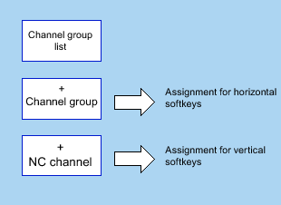

For the channel menu, a logical view is defined across all of the channels of all NCUs involved; this logical view is structured in channel groups and this in turn in specific NC channels.
A channel group list is defined for the channel menu in order to be able to switch over operation. A channel group list comprises one or several channel groups. In turn, a channel group comprises one or several NC channels.
In the channel menu, the channel groups can be selected using the horizontal softkeys.
The channels of a selected channel group can be selected with the vertical softkeys.
A certain NC channel of a specific NCU is always a switchover target that can be selected. A switchover to another channel triggered via the channel menu can implicitly mean switchover to another NCU.
| Note |
In a system, for example, a channel group can correspond to a machining station, the channels contained in it, machining units. Up to 32 channel groups each with up to 8 channels can be configured in a channel menu. |
For a system, the total structure of the channel menu is configured in the "netnames.ini" file. The configuring in the "netnames.ini" file includes all switchover targets that are used at the system. This configuration must be saved or distributed in a standard form across all SINUMERIK ONE systems that provide the channel menu.
An individual channel menu for the operating station is configured for each operating station in the particular "config.ini" file.
In the first stage, all channel groups that are used in the system are defined in the "netnames.ini" file, irrespective of the actual operating stations.
In the second stage, the version of the channel menu for the specific operating station is defined in the "config.ini" files belonging to the station.